hip servos 16, front plates to wheel servos 4, Pi 4, IMU plate 4
M2 x 6
10
bus servo adapters 8 (upper deck), IMU 2 (IMU plate)
M2 washer
16
hip servos
M2 x 6 pointed (servo bag)
12
yaw servo to lid 4, pitch servo in bracket 8
M4 x 10 + washer
2
OAK-D Lite
M3 x 5 x 4 heat-set insert
20
chassis upper 12, upper deck end pockets 4, hubs 4
Zip tie, 2.5 mm x 150 mm
6
UBECs 4, fuse holder 2
Horn centre screws
—
from the servo bags
Tools: soldering iron for the inserts, hex keys for M2 and M3 button heads (an L-key for M2 is necessary inside the spine), small Phillips screwdriver for the servo-bag screws, threadlocker, double-sided foam tape, a small piece of Blu Tack to hold screws on the key.
1
Push in the heat-set inserts
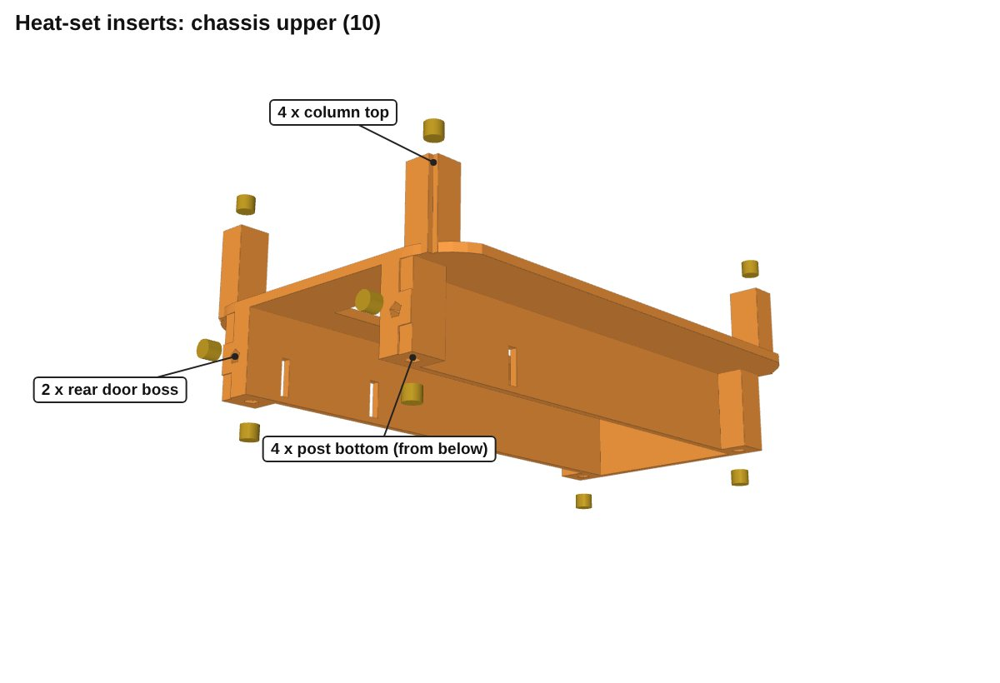
Chassis upper: push 4 inserts into the bottoms of the 4 corner posts.
Chassis upper: push 4 inserts into the tops of the 4 deck columns.
Chassis upper: push 2 inserts into the 2 rear bosses, from the rear face.
Chassis upper: push 2 inserts into the 2 front pads, from the front face.
Upper deck: push 1 insert into each of the 4 end pockets, from the end face (2 at the front, 2 at the rear). An M3 nut does not fit there.
Hubs: push 2 inserts into each hub, from the flange face (the face that goes against the wheel). Use the 2 larger holes (4.0 mm) on the centre line, above and below the centre hole. Do not use the 4 smaller holes (3.5 mm). They are for the horn screws.
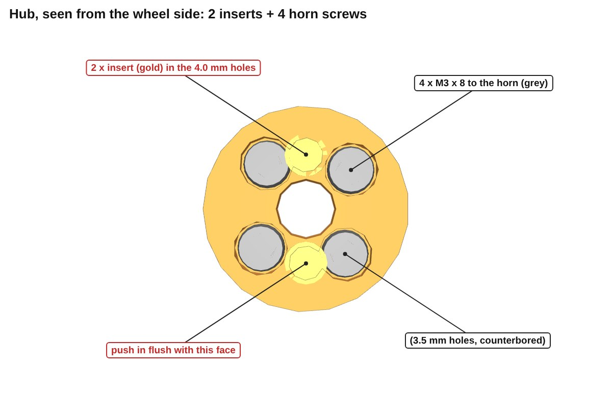
Check: each insert is flush with the face, and it is straight.
2
Join the chassis halves
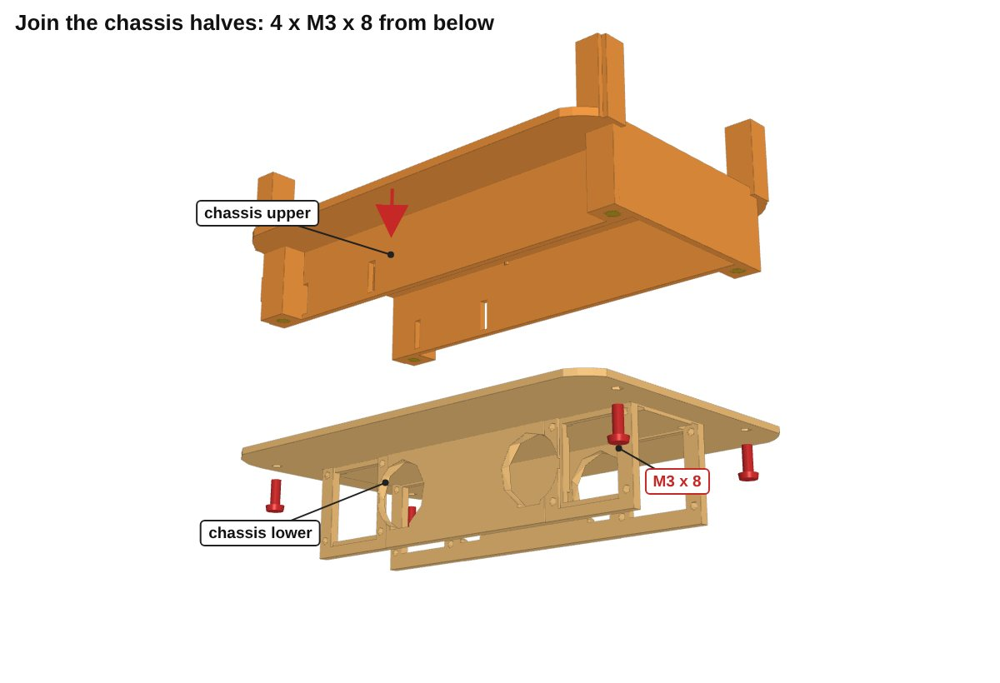
Set the upper chassis on the floor of the lower chassis. The door bosses go to the rear.
Put 4 x M3 x 8 up through the 4 corner holes in the floor, from below, into the inserts. Do not use washers.
Tighten until snug. The floor is 2 mm thick, so each screw goes 6 mm into its post. The hole is 6.5 mm deep.
3
Fit the 4 hip servos
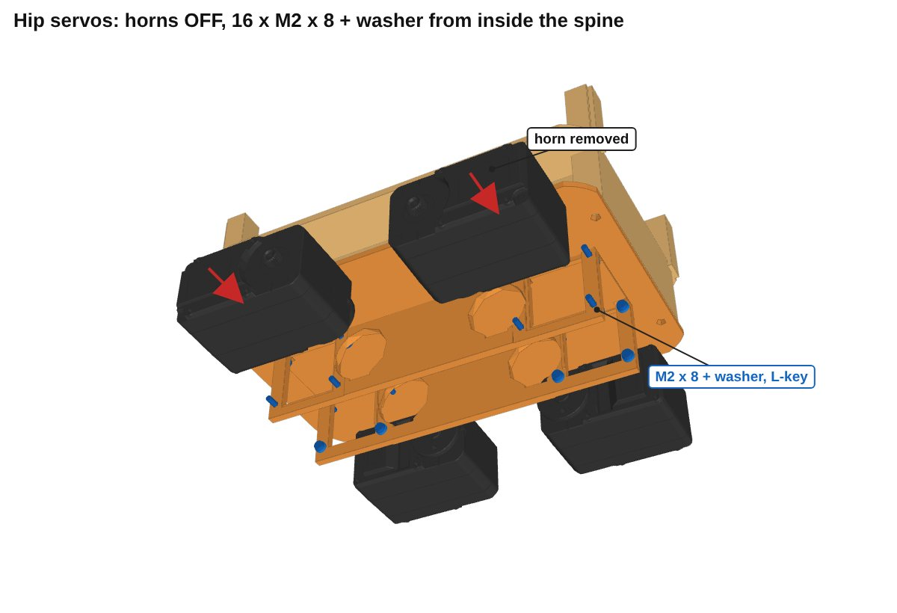
CautionDo this before the tray. You cannot reach these screws after the tray is on.
Set the servo IDs first, one servo at a time, with robot/tools/setup_ids.py: head pitch 1, head yaw 2, hip front-left 4, hip front-right 3, hip rear-left 6, hip rear-right 5, wheel left 11, wheel right 12. Put a tape label on each servo.
Keep the horn on each hip servo, with its centre screw tight. The tray has open slots, so the body goes into the tray with the horns on.
Plug the bus cable into the servo before you fit it. The sockets are on the back face, and they go into the pocket in the spine wall.
Put the servo against the spine wall. The back face must sit flat on the 4 pads. The idler disc goes into the round hole in the wall.
From inside the spine, put 4 x M2 x 8 with a washer through the wall into the servo. Use the 1.5 mm L-key or a 1.5 mm ball-end hex driver from below. For the screws near the floor, go through the 2 openings in the floor. The upper screw heads go into the small pockets in the spine roof.
Turn each screw by hand at the end. Stop when the head touches the washer. If a screw stops before that, do not force it. Put one more washer under it.
Do the same for all 4 servos (16 screws).
Check: no gap between the servo back and the pads. Each screw goes about 4.3 mm into the servo.
4
Put the power parts in the side bays
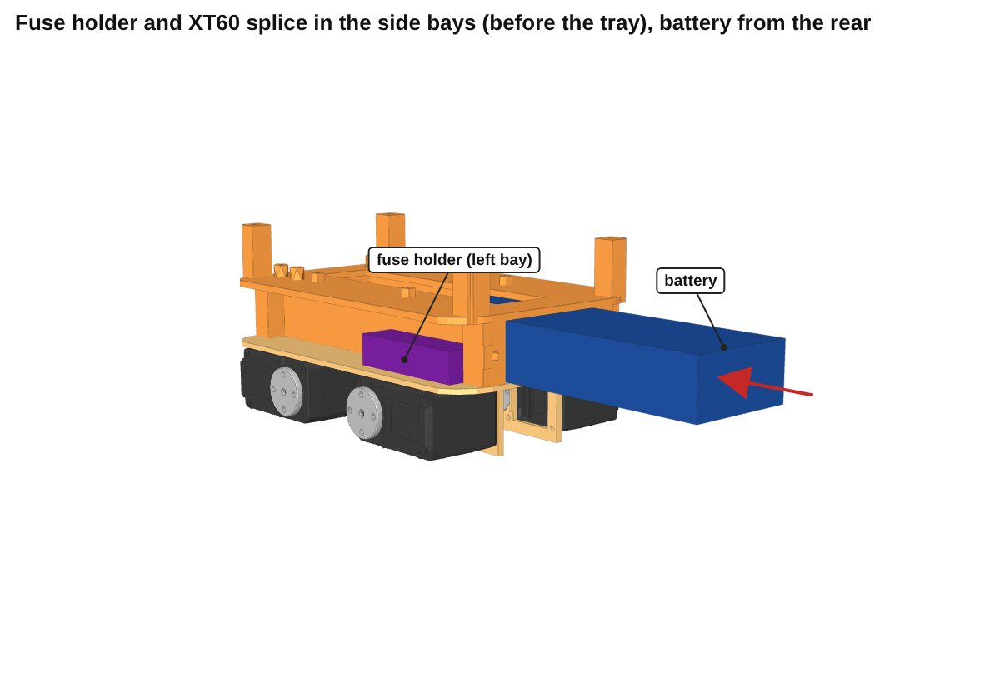
Do this before the tray. The tray closes the side bays.
Put the XT60 splice in the right side bay. Attach it with zip ties through the slots in the battery cradle wall.
The fuse holder does not fit in the left side bay. It goes on the outside of the tray left wall in step 5. Leave its wires long enough to go out through the rear-left slot.
Leave the wires long. The model does not show cable routes. Route them in step 11 and step 17.
5
Lower the body into the tray
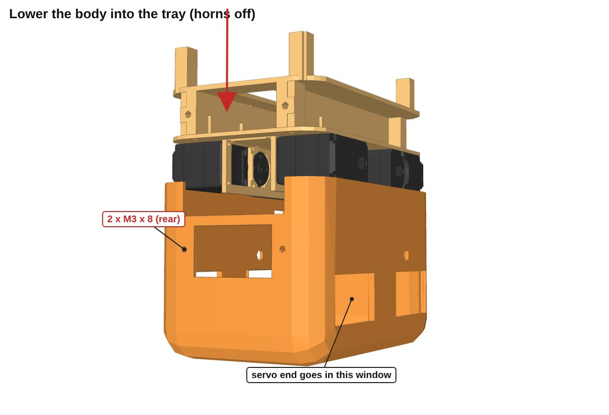
Keep the 4 hip horns on.
Hold the body level over the tray, with the front of the body over the front of the tray.
Align each hip servo with its slot. Each servo and its horn go down through the slot.
Lower the body straight down until the chassis sits on the tray floor. Do not push the tray walls.
Put 2 x M3 x 8 through the 2 holes in the tray rear wall into the rear boss inserts. Put 2 more through the 2 holes in the tray front wall into the front pad inserts.
Fuse holder: put it on the outside of the left tray wall, on the centre post between the 2 left slots. Its long side points front to back and its cap points up. Put 2 zip ties through the 4 small holes (one tie through the front pair, one through the rear pair) and round the holder. Run its wires in through the rear-left slot.
In the model the body goes straight down with no contact. The smallest gaps are 1.0 mm from each horn disc to the slot edge and 0.5 mm from each servo case to the slot. If the body does not go down freely, stop and find the cause. Do not use force. Inside the wall, each zip tie passes in a 2.0 mm gap between the tray wall and the chassis (a tie is 1.2 mm thick). If a tie does not go through with the body in the tray, lift the body out. Put both ties through the holes. Lower the body again. Then close the ties.
6
Check the hip horns
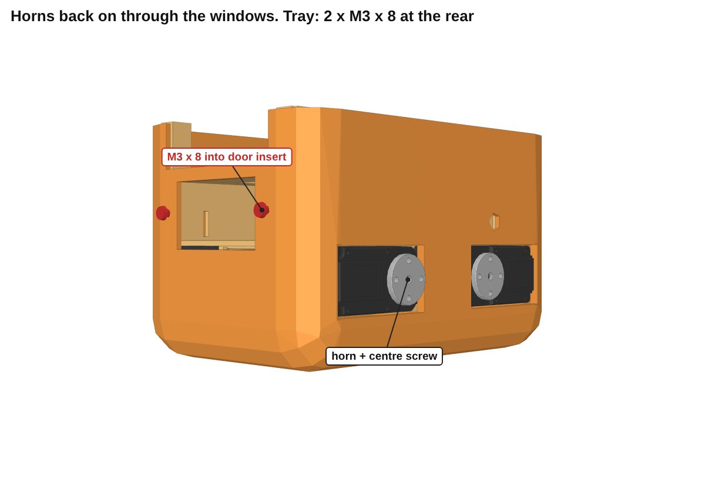
The horns stayed on in step 5. Make sure that each centre screw is tight.
If you removed a horn, push it onto its spline through the slot and put in the centre screw from the servo bag.
The horn position on the spline is not important. The software sets the zero later.
7
Build the 2 wheel units
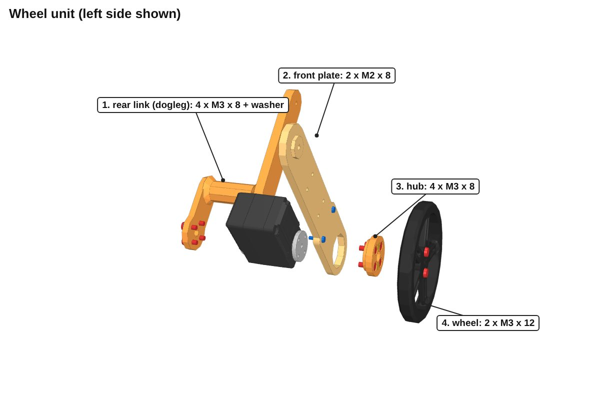
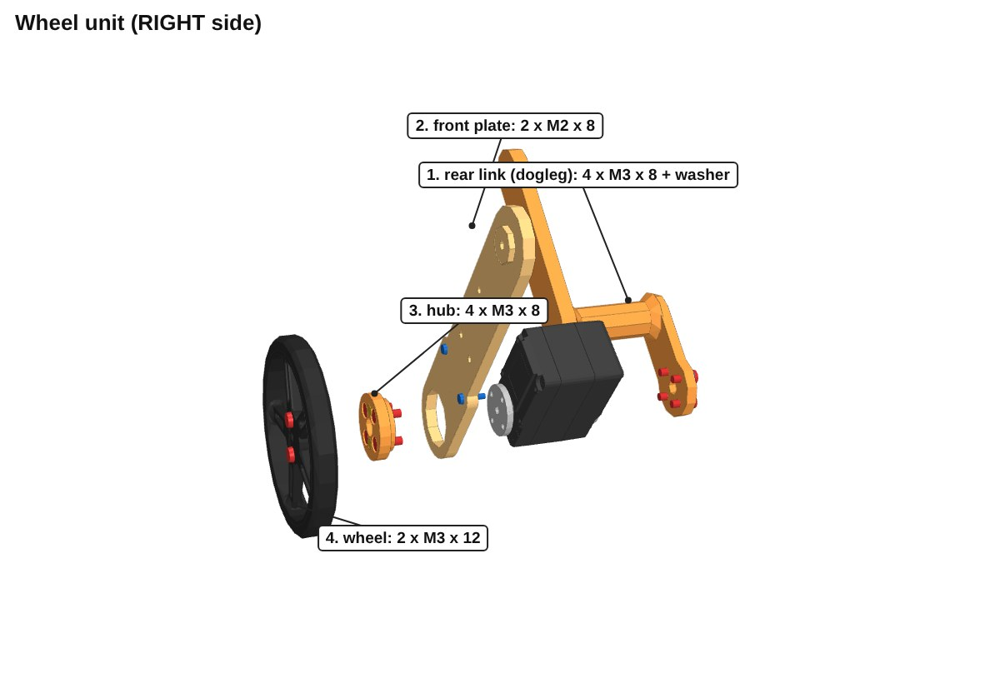
WarningPut a 1 mm washer under each rear-link screw. Without it, the screw tip goes through the idler disc and touches the servo case.
Fit the disc horn from the ST3215-HS box onto the wheel servo spline, with its centre screw.
Rear link (dogleg): put it on the idler disc on the servo back. Put 4 x M3 x 8 + washer through it into the disc, from the inside face.
Front plate: put the ring around the horn. Put 2 x M2 x 8 through the 2 bosses into the servo case. Do this before the hub, because the hub flange is wider than the ring.
Hub: put it on the horn through the ring, flange out. Put 4 x M3 x 8 through the counterbores into the horn. Do not use washers.
Wheel: put 2 x M3 x 12 through the wheel into the 2 hub inserts. These screws do not go into the horn. If a screw turns and does not grip, the insert is missing: push the insert in first (step 1).
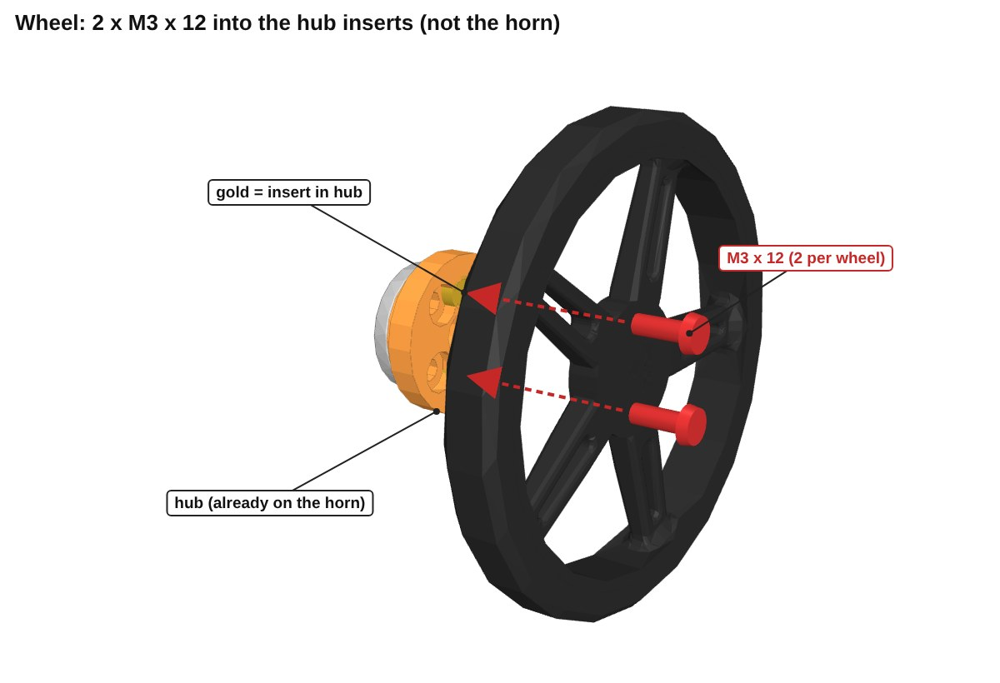
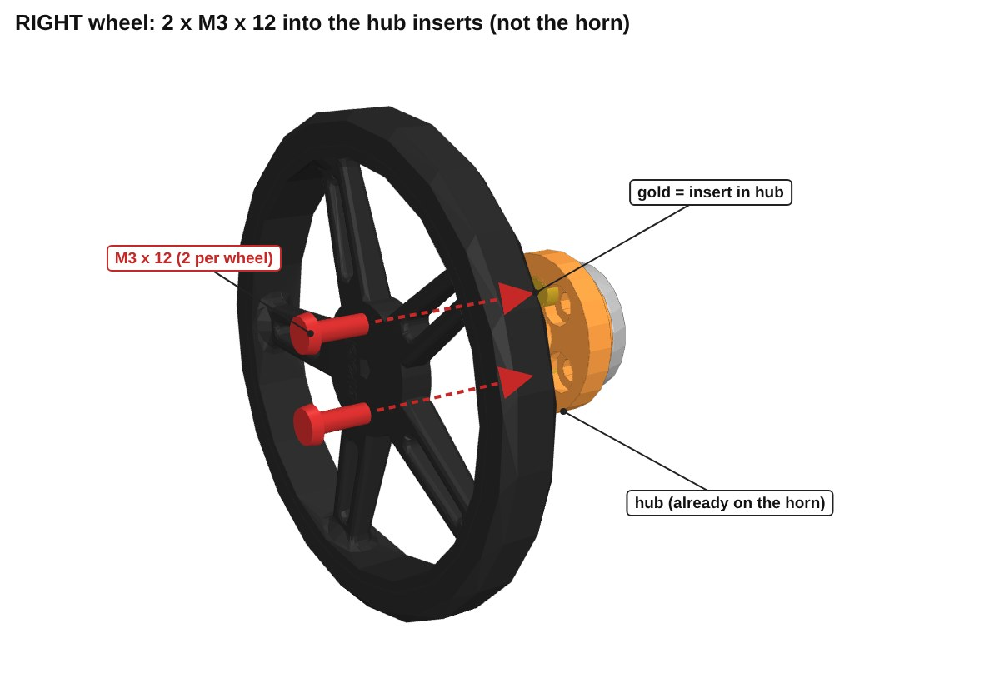
Tie the wheel servo cable to the front plate with zip ties through the small hole pairs.
Make the right unit as a mirror of the left unit (see the RIGHT pictures). The screws and the screw lengths are the same.
Check: the wheel turns with the horn, and the rear link turns freely on the idler disc.
8
Fit the legs
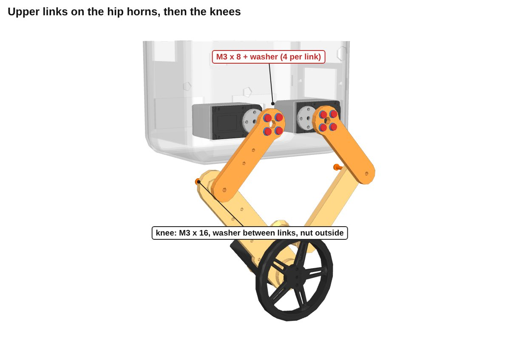
Put each upper link on its hip horn: the front links on the front servos and the rear links on the rear servos. The knee boss goes to the inside.
Put 4 x M3 x 8 + 1 mm washer through each link into the horn (16 screws).
Front knee: upper front link to the front plate of the wheel unit. Rear knee: upper rear link to the rear link of the wheel unit.
For each knee, put an M3 x 16 from the inside (the upper link side). Put a washer between the two links. Put one nyloc nut on the outside.
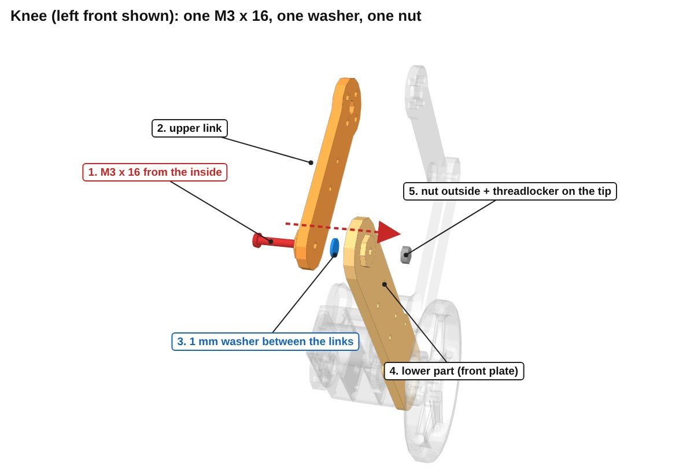
Put a small drop of threadlocker on the screw tip only. Do not put it on the plastic.
Do not tighten the nut hard. The knee must turn freely. The knee hole is 3.2 mm, so the screw is a tight fit. Turn it in. Do not hammer it.
Check: move each leg by hand through the full range. The legs must not touch the tray.
9
Fit the Pi 5
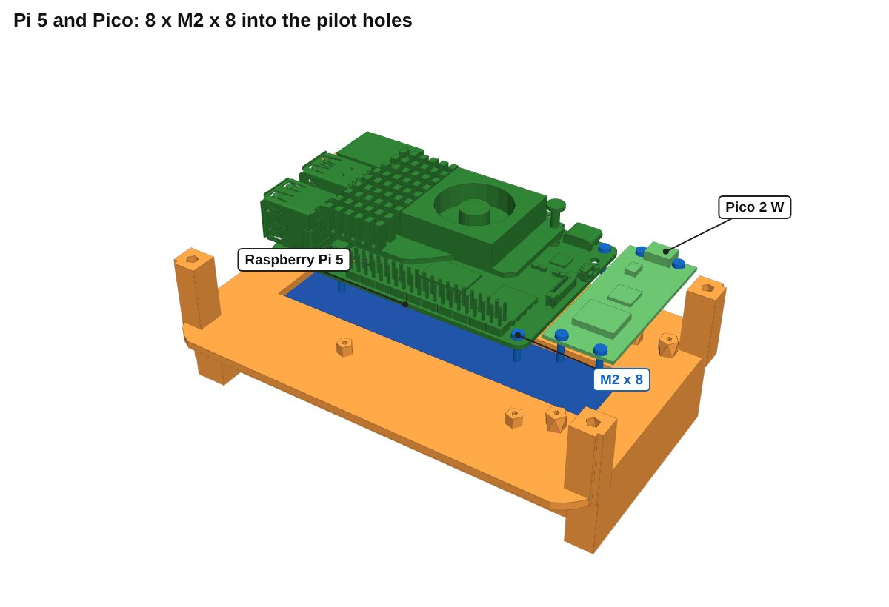
Slide the battery in from the rear. Hold it with tape or a strap. The robot has no battery door cover.
Pi 5: put 4 x M2 x 8 through the board into the 4 pilot holes. The screws cut their own thread.
Do not install the small board that the picture shows at the front of the deck. Its 4 posts hold the IMU plate (step 10).
10
Fit the IMU plate and the IMU
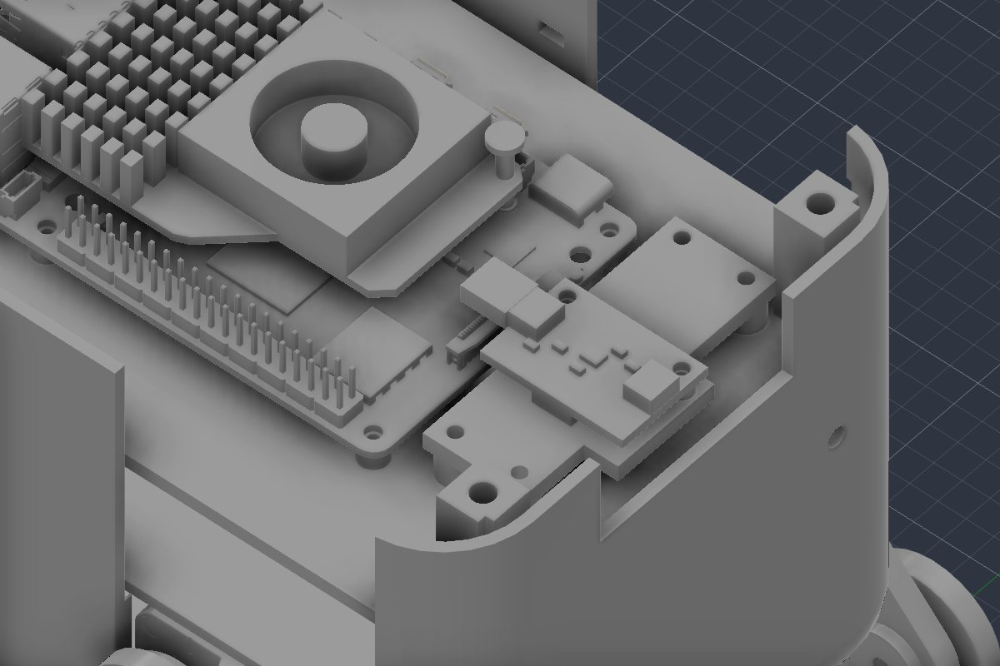
CautionDo this before the upper deck. You cannot reach the IMU after the upper deck is on.
Put the IMU plate on the 4 posts at the front of the lower deck. The 2 small posts point up. The tongue points to the front.
Put 4 x M2 x 8 through the plate into the 4 posts.
Put the IMU on the 2 small posts. The X arrow on the board points to the nose of the robot.
Put 2 x M2 x 6 through the board into the posts.
Connect the STEMMA QT cable to the rear socket of the IMU. Connect the other end to the Pi: red to pin 1 (3.3 V), black to pin 6 (GND), blue to pin 3 (SDA), yellow to pin 5 (SCL).
Check: the IMU board is level and does not move.
11
Fit the upper deck
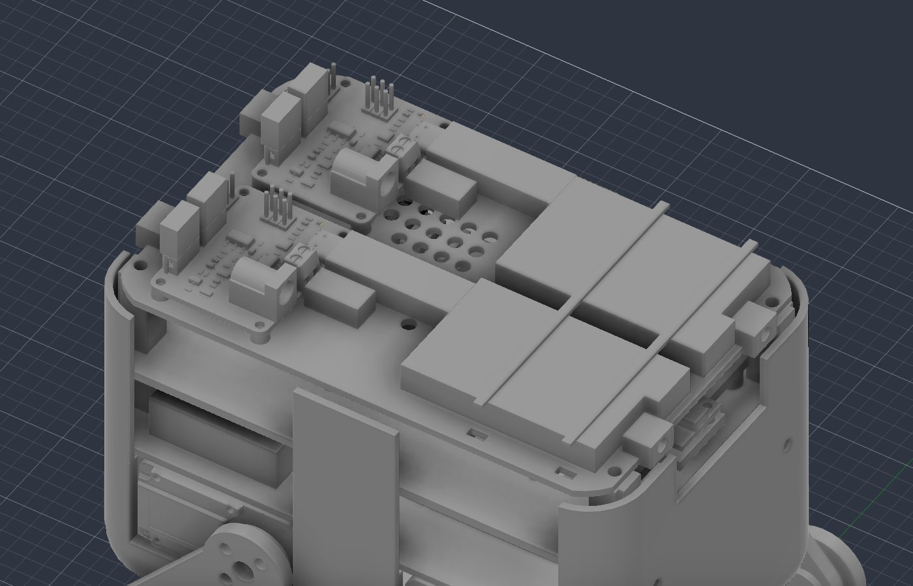
Connect the cables that go below the deck first.
Put the deck on the 4 columns. The 8 small posts go to the rear. Put 4 x M3 x 8 through the deck into the column inserts.
Bus servo adapter 1 (leg and head servos): put it on the 4 posts at the rear left. The edge with the USB-C socket points to the front. Put in 4 x M2 x 6.
Bus servo adapter 2 (wheel servos): put it on the 4 posts at the rear right in the same direction. Put in 4 x M2 x 6.
UBEC 1 (5.2 V, Pi): put foam tape below it. Put it at the front right, between the tie slots. Put 2 zip ties (150 mm) through the deck slots and over the UBEC.
UBEC 2 (7.4 V, leg and head servos): do the same at the front left.
Put the USB cables and the power wires of the adapters in the open channel between the adapters and the UBECs.
Make sure that the zip ties below the deck do not push on the IMU or on the Pi cooler.
Check: each adapter board is on its 4 posts and does not move. Each UBEC does not move.
12
Yaw servo on the lid
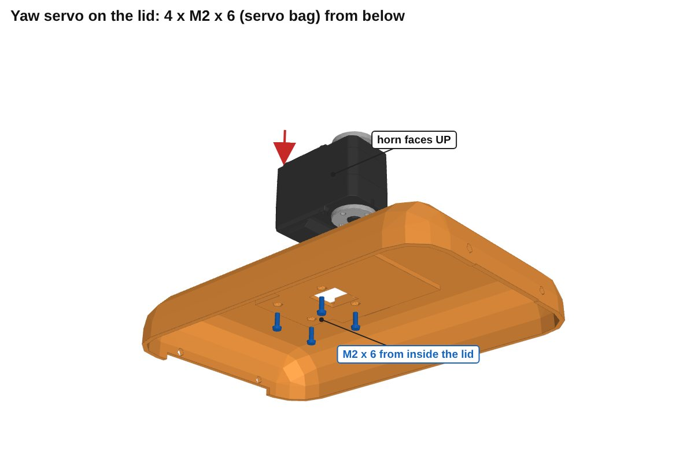
Keep the lid off the body.
Put the yaw servo on the lid with the horn UP. The back face sits on the lid.
Put the plugs and the cable down through the window in the lid.
Put 4 x M2 x 6 (servo bag) up through the lid into the servo, from inside the lid.
13
Bracket on the yaw horn
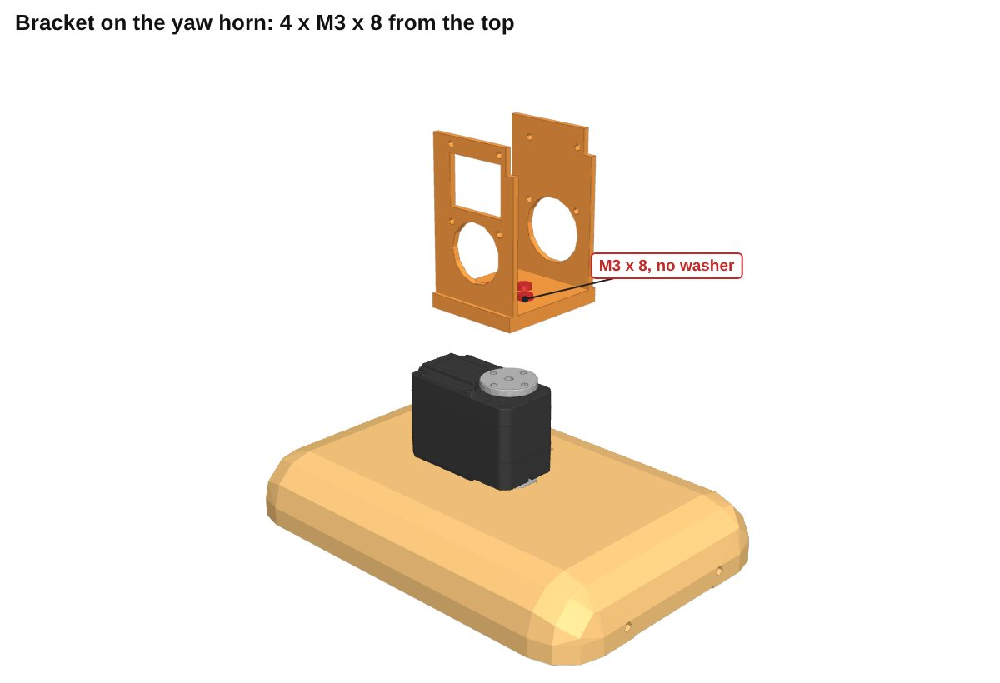
Put the bracket base on the yaw horn.
Put 4 x M3 x 8 from the top, inside the U, into the horn. Do not use washers.
14
Pitch servo into the bracket
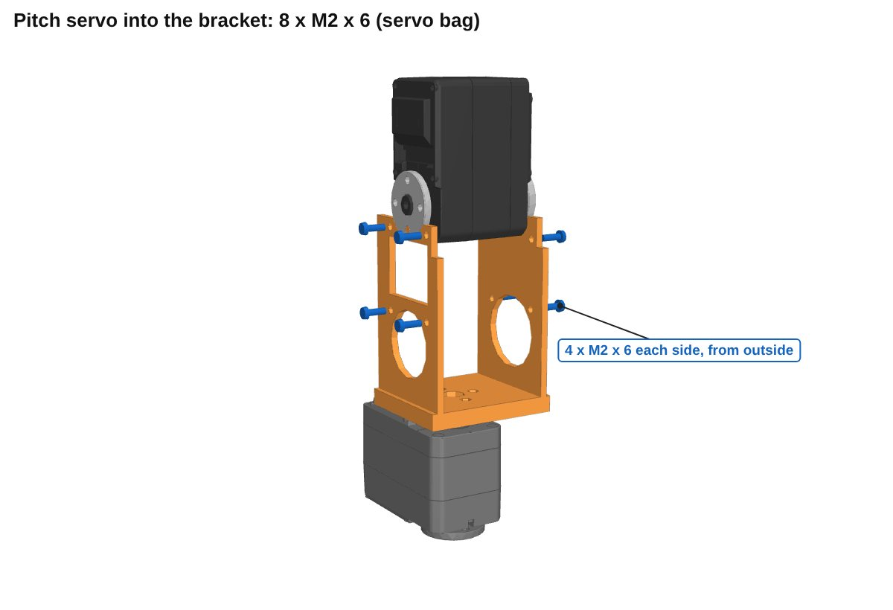
Plug the cable into the pitch servo first.
Put the servo into the U. The horn points to the left side of the robot.
Put 4 x M2 x 6 (servo bag) through each arm from the outside (8 screws). If a screw is loose at the end, put a washer under it.
Fit the horn on the spline with its centre screw. Fit the idler disc on the idler pin.
15
OAK-D Lite and head
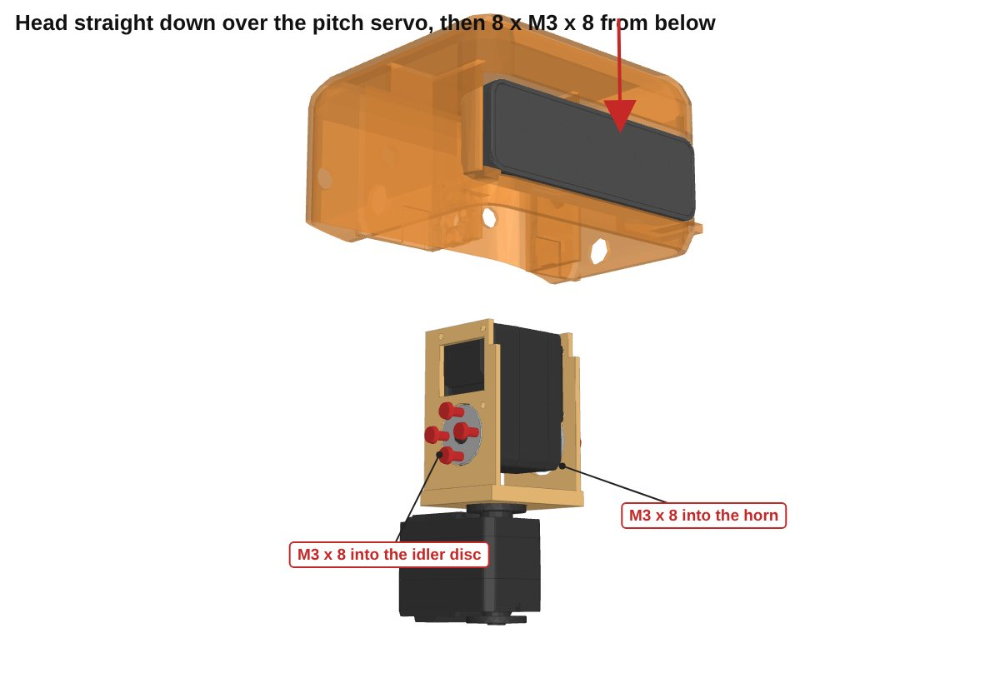
Put the OAK-D Lite on the ledges in the head, lens to the front.
Put 2 x M4 x 10 + washer into the OAK rear holes. Use the key through the two 8 mm holes in the rear wall. The 10 mm side holes are not for these screws.
Connect the USB-C end of the USB 3 cable to the OAK-D Lite.
Lower the head straight down over the pitch servo. The bracket screw heads slide through the grooves in the head ribs.
Put 4 x M3 x 8 through each rib (8 screws): 4 into the horn and 4 into the idler disc. Do not use washers. Put them in after the head is on, because the screw tips stop the head.
Reach up from under the open bottom of the head. Use the short end of the L-key and turn in small strokes. A small piece of Blu Tack on the key holds the screw.
16
Lid onto the body
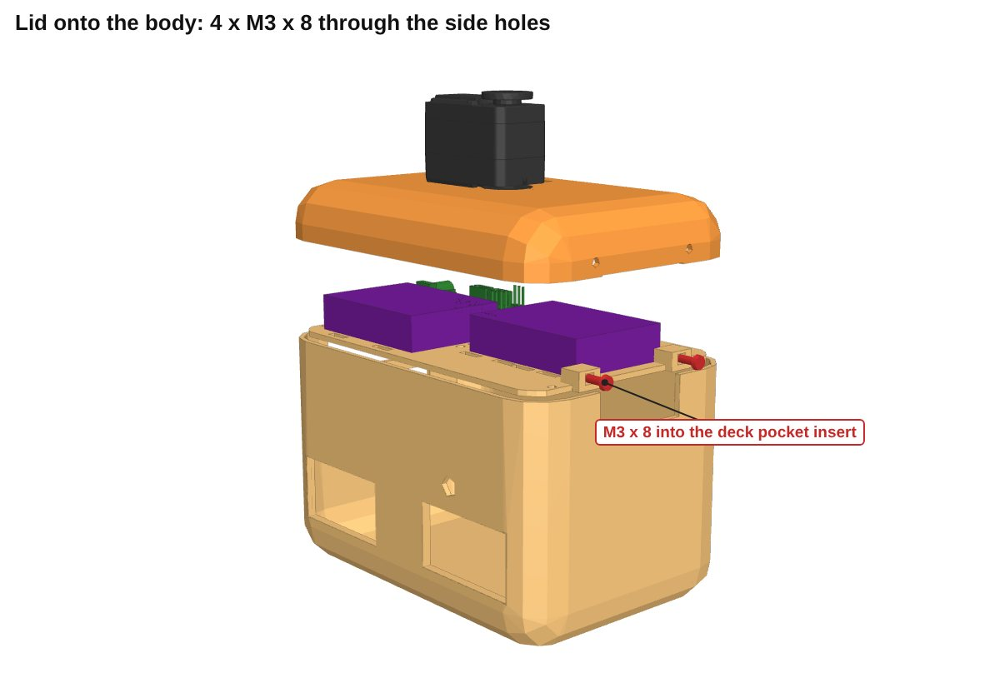
Connect the yaw and pitch servo cables and the OAK cable.
Lower the lid onto the tray.
Put 4 x M3 x 8 through the 4 side holes in the lid ends into the deck pocket inserts. The tip stops about 1 mm before the bottom of the pocket.
17
Power and final checks
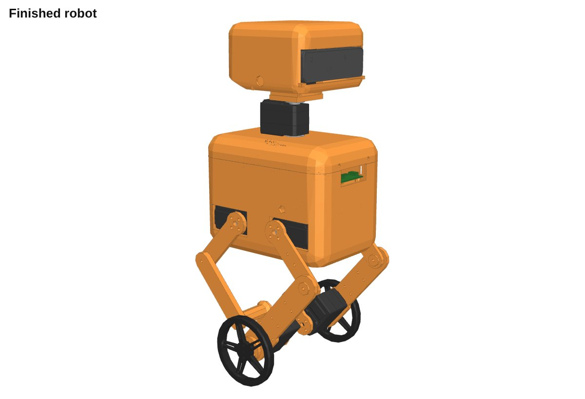
WarningDo not connect battery voltage to bus servo adapter 1. Do not connect the two servo buses together. The hip and head servos are 7.4 V servos. Battery voltage damages them.
Battery → 10 A fuse → XT60 splice.
Splice → UBEC 2 (7.4 V) → screw terminal of bus servo adapter 1 → 4 hip servos, yaw servo and pitch servo.
Splice → screw terminal of bus servo adapter 2 → 2 wheel servos (battery voltage).
Splice → UBEC 1 (5.2 V) → 5 V and GND pins of the Pi 5. Set usb_max_current_enable=1 on the Pi.
USB: one cable from the Pi to each bus servo adapter. One USB 3 cable from a blue port of the Pi to the OAK-D Lite.
Set the switch on each bus servo adapter to USB.
Before power: move each leg and the head by hand. Nothing must rub or touch.
Before you connect the adapters: measure the UBEC outputs. UBEC 1 must give 5.2 V. UBEC 2 must give 7.4 V.
First power: use a 6 V bench supply, not the battery.
Before each test: make sure that the 4 knee screws are not loose.
Software limits: leg height 65 to 140 mm, head up 30°, down 50° (40° at full yaw), yaw ±90°.
Not checked in the model
Cable routes. The model has space for the plugs on the upper deck, but it has no paths for the servo cables or the power wires.
The real depth of the servo case holes. The servo model shows holes 2 to 3 mm deep. If a screw stops before it is tight, do not force it. Add a washer.